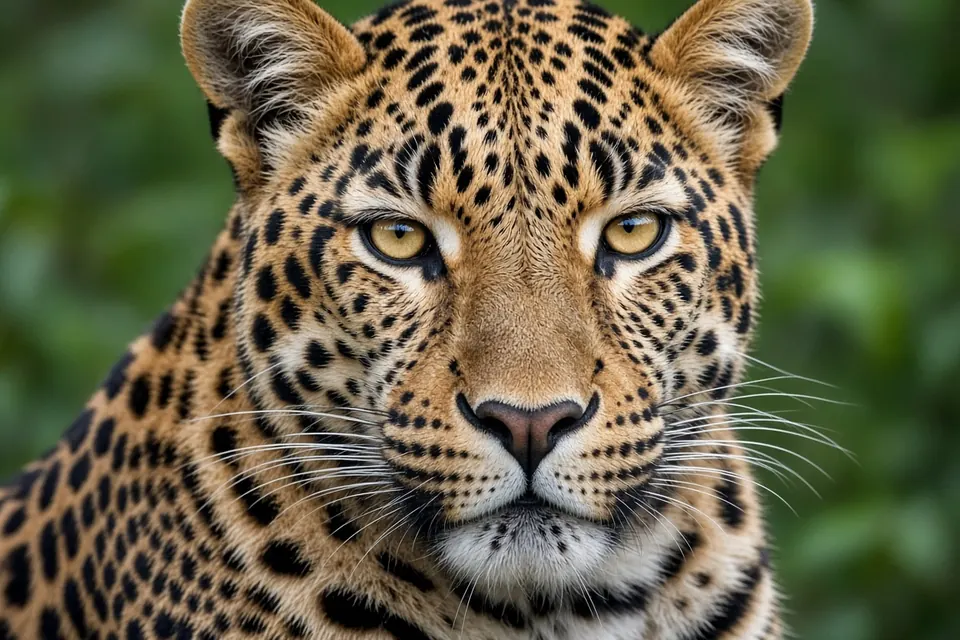

Home › Big cat comparison table
Big cat comparison: size, range, status and population
The tiger is the largest big cat, the lion is the only social one, the leopard has the widest range, the jaguar is the only big cat in the Americas, the cheetah is the fastest, and the snow leopard lives highest. The table below compares all six on size, range, habitat, social life, voice, IUCN Red List status and the latest population estimates.
Jump to: Comparison table | Biggest | Which roar | Spotted cats | Status ranking | What is a big cat
Big cat comparison table
Weights and lengths are the full ranges listed by the IUCN SSC Cat Specialist Group for each species, covering both sexes and all populations. Tap a species name for its full profile.
| Species | Weight | Head and body | Range | Main habitats | Social life | Roars? | IUCN status (year assessed) | Population estimate |
|---|---|---|---|---|---|---|---|---|
| Lion Panthera leo | 110 to 272 kg | 137 to 250 cm | Sub-Saharan Africa; Gir, India | Savanna, grassland, open woodland | Prides; male coalitions | Yes | Vulnerable (2025) | About 22,000 to 25,000 adults and subadults in Africa (2025) plus about 670 in India (2020) |
| Tiger Panthera tigris | 75 to 325 kg | 150 to 230 cm | South, Southeast and East Asia; Russian Far East | Forests, mangroves, grassland | Solitary | Yes | Endangered (2021) | 3,726 to 5,578 excluding cubs |
| Leopard Panthera pardus | 17 to 90 kg | 91 to 191 cm | Sub-Saharan Africa; scattered across Asia | Almost any habitat with cover | Solitary | Yes | Vulnerable (2023) | No reliable global estimate |
| Jaguar Panthera onca | 36 to 148 kg | 110 to 170 cm | Mexico to northern Argentina | Rainforest, wetlands, dry forest | Solitary | Yes | Near Threatened (2016) | 57,000 to 64,000 in Amazonia (about 89% of the total) |
| Cheetah Acinonyx jubatus | 23 to 65 kg | 113 to 140 cm | Southern and eastern Africa; Sahara; Iran | Savanna, grassland, dry woodland, desert | Females solitary; male coalitions | No | Vulnerable (2021) | About 6,500 mature individuals |
| Snow leopard Panthera uncia | 30 to 50 kg | 90 to 120 cm | Mountains of Central and South Asia | Alpine and subalpine mountains | Solitary | No | Vulnerable (2016) | 7,446 to 7,996 (2,710 to 3,386 mature) |
Population figures come from the most recent IUCN Cat Specialist Group summaries cited on each species page. They are estimates with wide uncertainty, and the counting methods differ between species, so compare them with care.
Which big cat is the biggest?
The tiger is the largest, at up to about 325 kg. The lion is second, and the largest male lions overlap with smaller tigers. The jaguar is third and the largest cat in the Americas. Leopards, snow leopards and cheetahs are much lighter, though a big male leopard can outweigh a cheetah. The cheetah is built light for speed rather than power.

Which big cats roar?
Lions, tigers, leopards and jaguars can roar. Snow leopards cannot, despite being in the same genus, and cheetahs cannot either; cheetahs purr and chirp instead. Details in which big cats can roar.
How to tell the spotted cats apart
- Cheetah: solid round spots, black tear marks from eye to mouth, slim build, small head, long legs.
- Leopard: rosettes usually without a central spot, medium build; Africa and Asia only.
- Jaguar: larger rosettes usually with spots inside, stocky build, big head, shorter tail; Americas only.
- Snow leopard: smoky grey coat, very long thick tail, high mountains of Asia.
Full guides: which big cat is it? ID guide and leopard vs jaguar vs cheetah.
Which big cat is most endangered?
On the IUCN Red List the tiger is the only one of the six listed as Endangered at species level. Lion, leopard, cheetah and snow leopard are Vulnerable, and the jaguar is Near Threatened. Species level labels hide serious local crises, though: the Asiatic cheetah in Iran and the Indochinese leopard are Critically Endangered, and the northern lion subspecies is Endangered. See big cat conservation and how many big cats are left.
What counts as a big cat?
Strictly, "big cats" means the five members of the genus Panthera: lion, tiger, leopard, jaguar and snow leopard. In everyday use the cheetah is usually included, and sometimes the puma (cougar) and clouded leopards too. This site covers the five Panthera species plus the cheetah.
Cite this page
APA: BigCatWise. (2026, October 24). Big cat comparison table. https://bigcatwise.com/compare.html
MLA: "Big cat comparison table." BigCatWise, 24 Oct. 2026, bigcatwise.com/compare.html.
Chicago: BigCatWise. "Big cat comparison table." Last modified October 24, 2026. https://bigcatwise.com/compare.html.
Please check the date you accessed the page and adjust to your teacher's or journal's style guide.
Sources
- IUCN SSC Cat Specialist Group: Lion
- IUCN SSC Cat Specialist Group: Tiger
- IUCN SSC Cat Specialist Group: Leopard
- IUCN SSC Cat Specialist Group: Jaguar
- IUCN SSC Cat Specialist Group: Cheetah
- IUCN SSC Cat Specialist Group: Snow leopard
- Durant et al. (2017) The global decline of cheetah and what it means for conservation, PNAS
- IUCN Red List: Panthera leo, Nicholson et al. (assessed 2025, published 2025)
- IUCN Red List: Panthera tigris, Goodrich et al. (assessed 2021, published 2022)
- IUCN Red List: Panthera pardus, Stein et al. (assessed 2023, published 2025)
- IUCN Red List: Panthera onca, Quigley et al. (assessed 2016, published 2017)
- IUCN Red List: Acinonyx jubatus, Durant et al. (assessed 2021, published 2024)
- IUCN Red List: Panthera uncia, McCarthy et al. (assessed 2016, published 2017)
Figures are rounded summaries of the sources above. Wild populations are hard to count, so estimates change as new surveys are published.